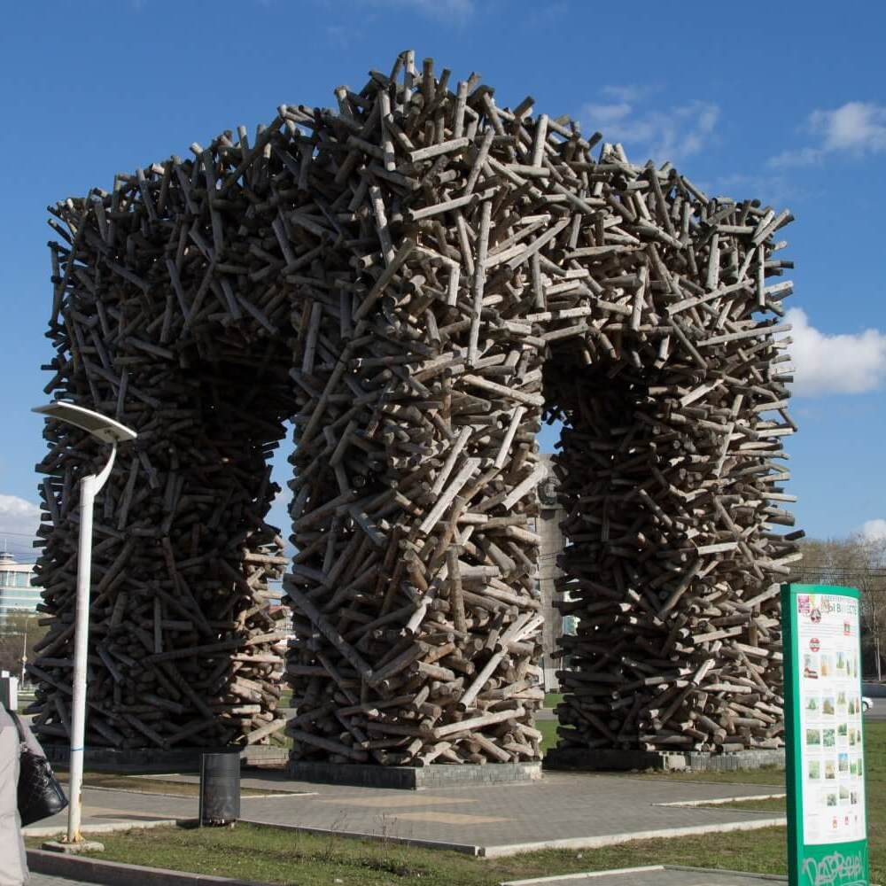

Красивая и уютная Пермь расположена на западе России, на главной реке Каме. Она славится своими достопримечательностями, и в этой статье мы расскажем о топовых местах, которые стоит посетить.
1. Пермский крайный краеведческий музей. Этот музей расположен в самом центре Перми и представляет собой огромную коллекцию местных исторических и культурных артефактов. Вы сможете узнать о традициях, обычаях и истории Пермского края. 2. Зоопарк Пермского края. Это место привлекает не только детей, но и взрослых. Здесь вы сможете увидеть различных животных, начиная от маленьких птиц и заканчивая большими хищниками. 3. Кунгурская ледяная пещера. Несмотря на то, что она находится недалеко от Перми, пещера является уникальной достопримечательностью. Вы сможете оценить красоту природного льда, который сохраняется в пещере круглый год. 4. Пермский драматический театр имени П.И. Чайковского. Этот театр является одним из лучших театров в России. Здесь вы сможете насладиться представлениями классических и современных произведений. 5. Музей-заповедник «Старая Слобода». Здесь вы сможете окунуться в атмосферу жизни Пермского края в XVIII и XIX веках. Музей представляет собой небольшой городок, где вы сможете увидеть деревенские дома, церковь и мельницу. 6. Пермский музей современного искусства. Этот музей представляет собой коллекцию современного искусства, включая живопись, скульптуру и фотографию. Здесь вы сможете увидеть произведения российских и зарубежных художников.
7. Пермский академический театр оперы и балета имени П.И. Чайковского. Этот театр представляет собой один из лучших оперных театров в России. Здесь вы сможете насладиться высококлассными оперными и балетными выступлениями. 8. Пермский краеведческий музей. Этот музей является одним из крупнейших краеведческих музеев в России. Здесь вы сможете узнать о истории Пермского края, его культуре и традициях. Коллекция музея включает археологические находки, предметы быта, народное творчество и многое другое. 9. Пермский зоопарк. Это отличное место для семейного отдыха. Здесь вы сможете увидеть более 100 видов животных со всего мира. В зоопарке проводятся интересные мероприятия и шоу для посетителей. 10. Пермский краеведческий театр кукол. Этот театр является одним из старейших в России. Здесь вы сможете насладиться уникальными выступлениями кукольных театров из разных стран мира. Для маленьких зрителей проводятся специальные представления. 11. Каменные пещеры. Расположенные в предгорьях Урала, они являются одной из главных достопримечательностей Пермского края. Пещеры состоят из многочисленных залов и коридоров, украшенных красивыми сталактитами и сталагмитами. 12. Музей истории Перми. Этот музей расположен в центре города и представляет собой уникальную возможность узнать больше о богатой истории Перми. В музее можно увидеть экспонаты, отображающие различные эпохи и периоды, начиная с древних времен и заканчивая современностью. 13. Музей изобразительных искусств имени К.С. Петрова-Водкина. Этот музей является одним из крупнейших музеев изобразительных искусств в России. Здесь вы сможете увидеть коллекцию произведений русских и зарубежных художников, включая картины, гравюры, скульптуры и другие произведения искусства.
Это только небольшой список топовых достопримечательностей Перми. Город предлагает еще много интересных мест для посещения, таких как парки, театры, музеи и многое другое. В Перми есть места для всех, независимо от ваших интересов и предпочтений. Пермь - это город с уникальным характером и необычайной красотой. Топовые достопримечательности города могут предложить посетителям увлекательные исторические, культурные и развлекательные мероприятия, которые не оставят никого равнодушным. В заключении, Пермь является городом с богатой культурной и исторической наследием. Визит в этот город не оставит вас равнодушным, а топовые достопримечательности, которые мы перечислили, несомненно, станут яркими впечатлениями для всех посетителей.
 @room.hotel
@room.hotel